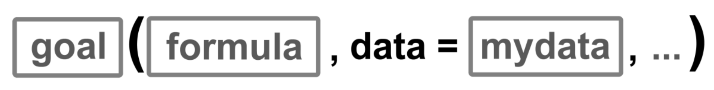
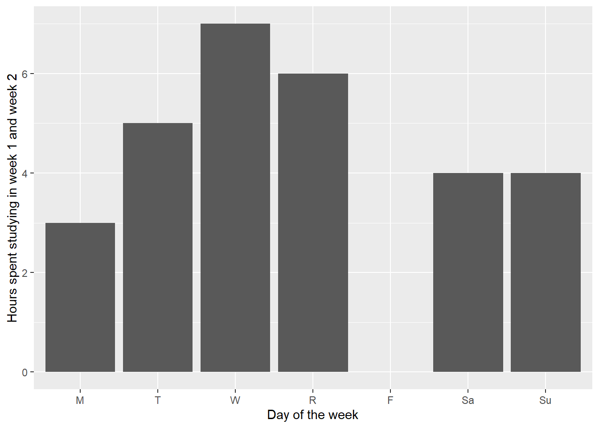
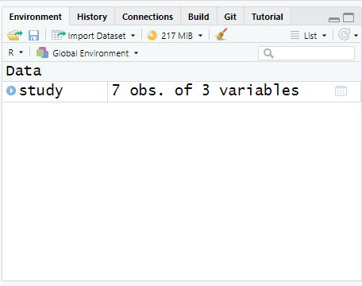

Lab 1: Introduction to R Primer
Digital Accessibility
Please note that all images were created with modifications to the defaults to make them digitally accessible. If you recreate this code in another environment, your plots have different colors and backgrounds.
Introduction
Did it increase? Did it decrease? Is it different? Was it successful? Did it achieve the goal? Are these things related? What might we expect?
These are common questions for which you could imagine wanting an answer. The ‘it’ might change, depending on any particular job, but the ultimate questions remain the same, and they all are answered with statistics. While statistics used to be done by hand using long and sometimes complicated formulas, statistics are largely (and thankfully!) calculated by computers now and, more and more often, in fields in research, non-profits, government and industry, they are calculated using the program R.
Recall your earlier reading “Why R?” to remember all the reasons we will be learning R in this course. You might feel intimidated at first using a program that takes code, rather than a series of drop-down menus, but we’ll walk through learning the basics of R so that when you leave the class you have a good grasp of R on which to continue building.
Part 1: R Orientation
You have gotten a quick orientation to R in class. If you need a refresher, read, watch and follow along with Chapter 3.4: RStudio Layout (12 min) in your own RStudio window to understand the use of different panes. You only need to read the entirety (including subsections) of Chapter 3.4, not the entire chapter 3. Don’t feel like you need to understand all of the coding at this point, just get a sense of what each pane does.
Now that we have an overview of R, lets get started using R! Don’t forget to start by first opening the lab project!
Part 2: Data Organization
One of the key parts of statistical analyses is good organization of your data itself and your files.
You should always work in a project in R to help organize all the files associated with that particular project.
R expects data to be organized in a particular way to calculate and manipulate your raw data into statistics. Read Data and Presentations (5 min) regarding how data tables need to be arranged for statistical analyses (Tabular and Tidy).
Part 3: R Coding
R, at its most basic, can be thought of as the most powerful calculator you’ve ever had. R isn’t powerful just from its calculation ability, but its ability to utilize functions to apply complex mathematical operations to whole sets of data, which is what we’re going to learn.
Let’s take a closer look at R commands. Complete the following primer: RStudio Primer: Programming Basics (25 min). (One additional note: the chapter gives some indication of the rules around object names, but doesn’t include one last rule: object names can’t have spaces!
3.1 Loading Packages
R comes with what is called a “Base” package, which contains numerous functions. There are tens of thousands of additional packages that contain even more packages for everything from 3-D visualizations to machine learning algorithms. To use functions from other packages you must first install the package
install.packages(c("ggformula", "mosaic", "tidyverse"))Installation only needs to happen once. If you are using the CSUMB Cal ICOR Server then the above packages are already installed and do not need to be installed again.
Loading packages must happen each session. We should always load our packages first thing. Go ahead and run the following code to load our needed packages.
3.2: R Syntax
As you covered in class, the R language has its own set of grammatical rules. The good news is that once you’ve learned the basic R structure, it is easy to apply to new commands.
To get R (or any software) to do anything, there are two important questions you must be able to answer: 1) What do you want R to do, and 2) What must R know to do that?
The answers to those questions can help us fill in the boxes of our generic formula template:

Q. What do you want R to do?
A. goal
- This determines the function to use.
- Functions carry out commands from their inputs and create an output; in other words, we apply a function to its inputs to create the output.
- For a plot, the function will describe what sorts of marks to draw (points, in our example). A function could also describe the type of calculation or descriptive statistic.
Q. What must R know to do that?
A. arguments
- The inputs in R are called arguments.
- For a plot or statistic calculation, we must identify the variables and the data frame that contains them.
The application of a function to arguments follows a simple structure: the name of a function is followed by a pair of parentheses. Values for the arguments are specified inside the parentheses. If there is more than one argument, the arguments are always separated by a comma.
In the generic function above, goal is the name of any function. The arguments (formula & mydata) identify the variables and dataframe that contains them. The ... indicates any additional arguments we many want to include.
Generally, functions are written as the name of the function followed by parentheses, e.g. log(). The empty parentheses are merely a reminder that the name refers to a function.
Sometimes, functions need more than one argument. R functions require the first argument supplied to them to be something specific, but then arguments can be added as needed – those additional arguments need to be named so that R knows exactly what you are trying to specify. Named arguments always have the form:

Those arguments are added as needed in place of the ... in our template (Fig 3). We can include as many arguments as needed as long as we separate each one with a comma.

Formula Template
The formula argument in our template is where we define the variable of data to which we want to apply our goal. There are actually a few options for what that variable can look like, depending on the variables we wish to use. We use y to designate our y-axis variable, x to designate our x-axis variable (or in the second case, one single variable), and z to designate a conditioning variable that lets us create separate panels when we group data. The |z can also be applied to the single variable ~x.
Assembling the pieces
Now we need to put together the pieces we’ve learned with our actual scenario. For example, we might keep a record of the number of hours spent studying on each day of the week during week 1 and during week 2 of the semester. We want to make a graphic of the hours spent studying on each day of the week. In this case, we have two variables: hours and day, so we’ll use the template:

So let’s identify the pieces.
| box | fill in with | purpose |
|---|---|---|
goal |
gf_col |
plot bars of values |
y |
hours |
y-axis variable |
x |
day |
x-axis variable |
mydata |
study2 |
name of the dataset |
We need to fill in each piece into our template. So our code goal (y ~ x , data = mydata) becomes gf_col(hours ~ day, data = study2) and creates the following plot:
gf_col(hours ~ day, data = study2,
ylab = "Hours spent studying in week 1 and week 2",
xlab = "Day of the week")
Learning any new software can feel daunting, but referring back to this template and asking yourself the two questions – what do I want R to do? what must R know to do that? – will help you throughout your time working with R.
3.3: Vectors, Objects, & Dataframes
The real power of R comes not from calculating values like a calculator, but in manipulating sets of data. Vectors are sets of data that are organized together. Groups of vectors that are associated are dataframes.
For example, we could load version of our data on hours spent studying in week 1 and week 2 that has three columns, one for day and one for each week.
# A tibble: 7 × 3
day wk1 wk2
<chr> <dbl> <dbl>
1 M 1 2
2 T 1 4
3 W 2 5
4 R 2 4
5 F 0 0
6 Sa 1 3
7 Su 1 3To be able to work with the dataframe in R, we need to read the csv file into R, using read_csv() which comes from the tidyverse package. We apply that function to the name of the csv file we wish to load, inside quotation marks. Go ahead and run the following code.
Error:
could not find function "read_csv"
If you get the error could not find function "read_csv" be sure you ran the code in Section 3.1.
That is okay, but that code alone means that R reads it and then immediately forgets it. If you tried this, your data wouldn’t appear in your “Environment” pane. We need R to remember and store the information in its active memory.
We can store information in R to use again later as an object. An object is a name given to a set of information in R. It can hold dataframes, vectors, numbers, or outputs from commands. To store information, we have to use an assignment operator, <-. Anything on the right of the assignment operator is stored as the name on the left of the assignment operators.

Names of objects in R can be almost anything, as long as it doesn’t start with a number, doesn’t contain a mathematical operator (*, /, ^, etc.) and doesn’t contain a space. It is also good practice not to name objects the same as function names.
Thus, my code now becomes the following (run it and see what happens!).
You won’t see the data, just some information about the data, but if you were to look at the Environment pane, a new object would have appeared in RStudio.

We can look at all the data within these vectors again by typing the object name into the line of code without any other function. Doing so will print the dataframe to your screen as an output. Go ahead and run the code.
Sometimes we don’t want to see all the data, as there are hundreds of data points. We may just want to see the first few lines of data to get a feel for how it is entered. In that case, we can use the function head() to see the first 6 lines of cases:
Our vectors are embedded within an object. To access them, we need to direct R first to the dataframe object, then to the variable object. We do so using one of two structures, depending on the function. We also need to know the names our variables are called. We can find out the names our variables are called by using the code names()
The first you have already seen in our template – we identify the dataframe using an argument. We can then apply functions to specific variables within our dataframe, such as finding the mean number of hours studied in week 1:
or the total number of hours studied across week 1:
Some functions don’t accept the data argument. In those cases, we identify the dataframe and variable using the structure: DATAFRAME$VARIABLE. We can then find the total number of rows in study using the function length()
You will notice that mean() and sum() calculated a single value across the vector. Other functions/operations are vectorized functions - they will apply to each element within the vector and return a vector as the output.
For example, if instead of the total number of hours studied across the week, we wanted to know the total number of hours studied on each day of the week, between weeks. We can’t use sum() because it collapses the information of the days of the week. We can instead add our vectors together:
You will notice that the output of this is to return a vector. Each element of the vector was created by adding the same element of each variable. For example, the first value, 3, was obtained by adding the number of hours studied on Monday of week 1 (1) with the number of hours studied on Monday of week 2 (2), for a total of 3 hours studied on Monday across the two weeks.
A few other useful functions can help us understand the dataset we loaded into R. ncol() lets us determine the number of variables in the dataset. nrow() lets us determine the number of rows (sometimes the same as cases) in the dataset.
Part 4: R Grammer & Errors
One of the most frustrating parts for people learning R is troubleshooting errors. R is incredibly powerful, but it is dumb. It can’t guess what you meant, nor add in a comma that you forgot to type. Read Chapter 6: Deciphering Common R Errors (5 min) which covers the most common errors in R and how to decipher them. R errors aren’t always clear to new users, but they almost always will direct you to where the problem occurs. Sometimes that is just telling you that it can’t find the file or object you are trying to point it to. Other times, it will repeat your code right up to the point where it didn’t understand. That helps focus your attention when searching for errors.